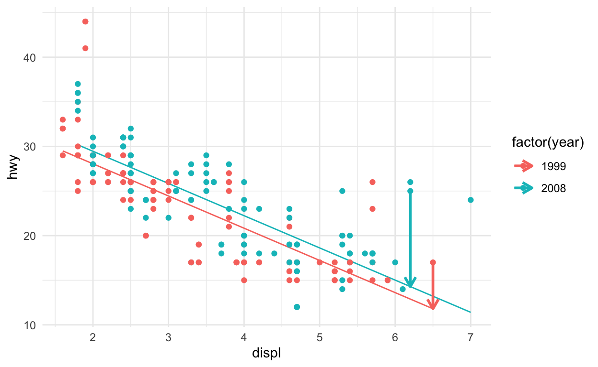
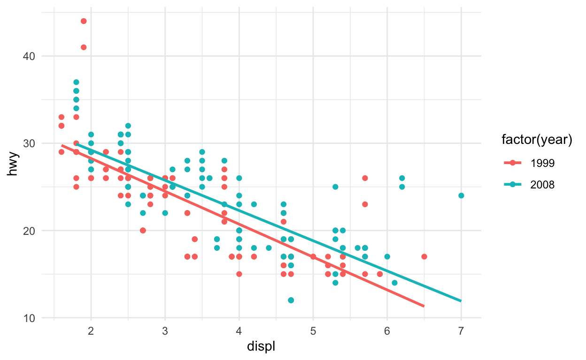
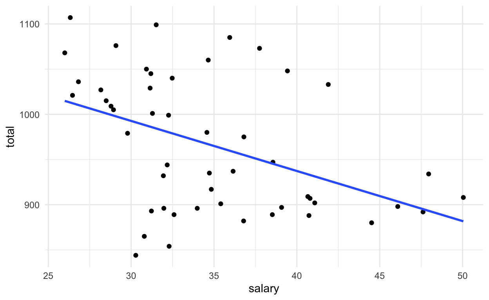
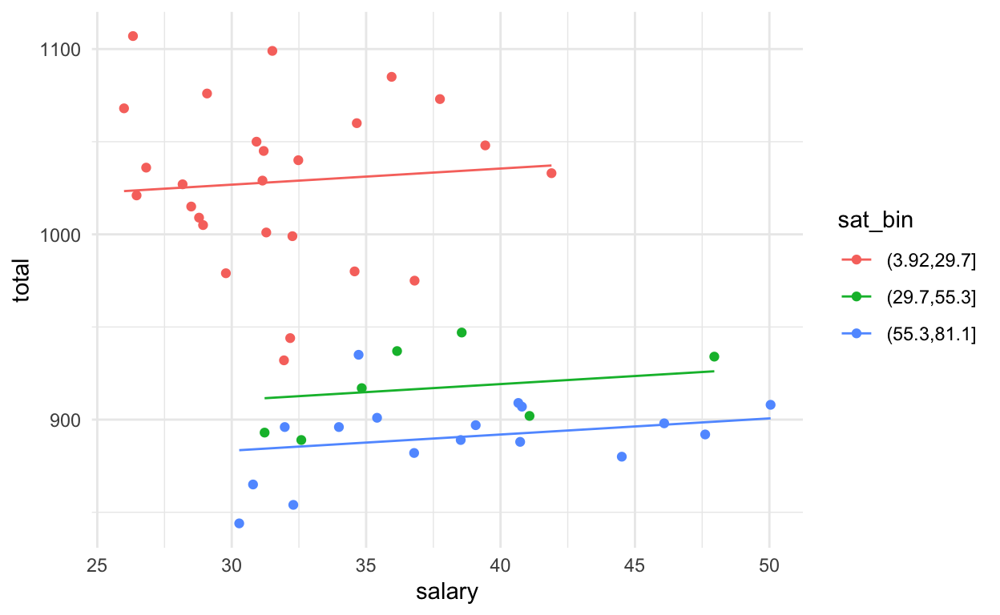
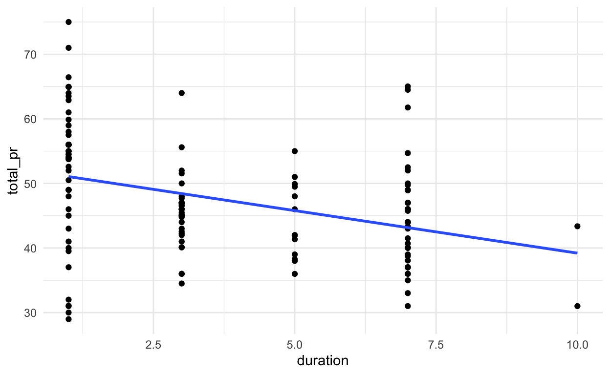

Evaluating and extending parallel slopes model
This lesson covers model evaluation. By looking at different properties of the model, including the adjusted \(R^2\), you’ll learn to compare models so that you can select the best one. You’ll also learn about interaction terms in linear models.
Model fit, residuals, and prediction
Residuals

One of the most natural questions we might have about our model is: “how well does it fit?” We measure this by computing—for each observation—the difference between the actual value of the response variable and the fitted value from our model. This distance is called a residual. Residuals for two observations are illustrated in this plot with vertical arrows. Just as in simple linear regression, the model fitting procedure will automatically minimize the length of those arrows across all of the points.
In a parallel slopes model, our model is represented by two lines, but only one of the lines is relevant for each observation. In the plot, the green points—each corresponding to a car made in 2008—are compared to the green line, and the orange points—each corresponding to a car made in 1999—are compared to the orange line.
Note that this necessarily makes our parallel slopes model more flexible than a simple linear regression model. The two lines are constrained to be parallel, but we still have two instead of one. If the best fit occurs when the two lines are very close together, then the coefficient of the categorical variable will be very small, and the parallel slopes model will be very similar to the simple linear regression model.
Model Fit
The coefficient of determination—usually called R-squared or \(R^2\)—carries over from simple linear regression. Recall that the sum of the squared residuals (or errors) is denoted SSE. If the model fits the data better, then the residuals are smaller, the SSE is smaller, and the \(R^2\) value is higher. The total sum of the squares—denoted SST—is a function of the response variable alone and does not depend on the model.
In general, a higher \(R^2\) may be a sign of a better model fit, but the situation becomes more complicated in multiple regression because additional explanatory variables will always increase \(R^2\). Thus, model fits in multiple regression are often compared using the adjusted \(R^2\) value defined here. Note that the only difference is that a penalty is applied as the number of explanatory variables \(p\) increases. Unlike \(R^2\), adjusted \(R^2\) will not necessarily increase as new explanatory variables are added—it could go up or down.
To summarize:
- \(R^2 = 1 - \frac{SSE}{SST}\)
- \(SSE\) gets smaller as \(\Rightarrow R^2\) increases
- As \(p\) (number of explanatory variables) increases \(R^2\) will always increase (or stay the same)
- To adjust for an increasing \(R^2\) use: \(R^2_{adj} = 1 - \frac{SSE}{SST} \cdot \frac{n-1}{n-p-1}\)
Fitted values
# returns a vector
predict(mod)# returns a data.frame
augment(mod)Retrieving the fitted values produced by our model can be done in two
different ways. The predict() function will return the
fitted values as a vector, while the augment() function
from the broom package will return a data.frame that contains the
original observations, the fitted values, the residuals, and several
other diagnostic computations.
Since this tutorial uses the tidyverse, we will generally prefer the latter method.
Another important bit of functionality is the ability to make out-of-sample predictions. This means using our model to make predictions about observations that were not part of the data set on which the model was fit.
2008 Toyota Matrix

For example, suppose you currently drive a 2008 Toyota Matrix like the one you see here. However, this car isn’t in our dataset. What does our model predict for the fuel economy of this car?
Predictions
new_obs <- data.frame(displ = 1.8, year = 2008)# returns a vector
predict(mod, newdata = new_obs)## 1
## 30.17807# returns a data.frame
augment(mod, newdata = new_obs)To figure this out, we can simply input the values of the explanatory
variables. In this case, my car has a 1.8 liter engine. We can create a
new data.frame with the information, and then feed it to
predict() or augment() using the newdata
argument. Either function will return a predicted mileage of 30.18 mpg.
This is slightly less than the manufacturer’s reported 33 mpg, giving us
a residual of 2.82 mpg.
\(R^2\) vs. adjusted \(R^2\)
Two common measures of how well a model fits to data are \(R^2\) (the coefficient of determination) and the adjusted \(R^2\). The former measures the percentage of the variability in the response variable that is explained by the model. To compute this, we define
\[ R^2 = 1 - \frac{SSE}{SST} \,, \]
where \(SSE\) and \(SST\) are the sum of the squared residuals, and the total sum of the squares, respectively. One issue with this measure is that the \(SSE\) can only decrease as new variables are added to the model, while the \(SST\) depends only on the response variable and therefore is not affected by changes to the model. This means that you can increase \(R^2\) by adding any additional variable to your model - even random noise.
The adjusted \(R^2\) includes a term that penalizes a model for each additional explanatory variable (where \(p\) is the number of explanatory variables).
\[ R^2_{adj} = 1 - \frac{SSE}{SST} \cdot \frac{n-1}{n-p-1} \,, \]
Your turn
Model Fit
Now try it for yourself. The model mod from the
mariokart data set is already in your workspace.
- Use
mutate()to add a variable callednoiseby callingrnorm()with the argumentnequal to thenrow()to themariokartdata set. Save the new dataframe asmariokart_noisy. - The first argument of
lm()is a formula involving the variablestotal_pr,wheels,cond, andnoise. - Call the function
summary()to compute \(R^2\) and adjusted \(R^2\) on the new model objectmod2. Did the value of \(R^2\) increase? What about adjusted \(R^2\)?
# R^2 and adjusted R^2
# add random noise
mariokart_noisy <- ____
# compute new model
mod2 <- ____
# new R^2 and adjusted R^2
_____(____)# R^2 and adjusted R^2
summary(mod)# add random noise
mariokart_noisy <- mariokart |>
mutate(noise = rnorm(n = nrow(mariokart)))# compute new model
mod2 <- lm(total_pr ~ wheels + cond + noise, data = mariokart_noisy)# R^2 and adjusted R^2
summary(mod)
# add random noise
mariokart_noisy <- mariokart |>
mutate(noise = rnorm(n = nrow(mariokart)))
# compute new model
mod2 <- lm(total_pr ~ wheels + cond + noise, data = mariokart_noisy)
# new R^2 and adjusted R^2
summary(mod2)Prediction
Once we have fit a regression model, we can use it to make predictions for unseen observations or retrieve the fitted values. Here, we explore two methods for doing the latter.
A traditional way to return the fitted values (i.e. the \(\hat{y}\)’s) is to run the
predict() function on the model object. This will return a
vector of the fitted values. Note that predict() will take
an optional newdata argument that will allow you to make
predictions for observations that are not in the original data.
A newer alternative is the augment() function from the
broom package, which returns a data.frame
with the response variable (\(y\)), the
relevant explanatory variables (the \(x\)’s), the fitted value (\(\hat{y}\)) and some information about the
residuals (\(e\)).
augment() will also take a newdata argument
that allows you to make predictions.
The fitted model mod is already in your environment.
- Compute the fitted values of the model as a vector using
predict(). - Compute the fitted values of the model as one column in a
data.frameusingaugment().
# return a vector
# return a data frameHint
You can get predictions withpredict(mod), and
augment() works similarly as well.
# return a vector
predict(mod)
# return a data frame
augment(mod)Understanding Interaction
Interaction
ggplot(data = mpg, aes(x = displ, y = hwy, color = factor(year))) +
geom_point() +
geom_smooth(method = "lm", se = 0)
Thus far we have considered models where the regression lines were constrained to be parallel. But what if the lines didn’t have to be parallel? In this plot, we illustrate the model when the lines are allowed to have their own slopes. Now, the relationship between fuel economy and engine size is not the same for the newer cars as it is for the older cars. The slope of that relationship now changes based on the year. Thus, engine size and year are allowed to interact in their relationship with fuel economy.
Adding interaction terms
\[ \hat{mpg} = \hat{\beta}_0 + \hat{\beta}_1 \cdot displ + \hat{\beta}_2 \cdot is\_newer + \hat{\beta}_3 \cdot displ \cdot is\_newer \]
- For older cars
\[ \hat{mpg} = \hat{\beta}_0 + \hat{\beta}_1 \cdot displ \]
- For newer cars,
\[ \hat{mpg} = (\hat{\beta}_0 + \hat{\beta}_2) + (\hat{\beta}_1 + \hat{\beta}_3) \cdot displ \]
Mathematically, we achieve this by adding yet another term to our
model. This third explanatory variable is the product of
displ and is_newer, and it is called an
interaction term.
The addition of this term results in the two regression lines shown above. Note that unlike in the previous model, now both the intercepts and the slopes are different.
Interaction syntax
# add interaction term manually
lm(hwy ~ displ + factor(year) + displ:factor(year), data = mpg)##
## Call:
## lm(formula = hwy ~ displ + factor(year) + displ:factor(year),
## data = mpg)
##
## Coefficients:
## (Intercept) displ factor(year)2008
## 35.7922 -3.7684 0.3445
## displ:factor(year)2008
## 0.3052In R, we can add an interaction term using some new syntax. Here, we simply add a third term to our model, using the colon to denote multiplication of the explanatory variables in the interaction term. This produces a model with four coefficients:
- one for the intercept,
- one for displacement,
- one for the year, and
- one for the interaction of displacement with year.
Reasoning about interaction
Here is the no interaction (parallel slopes) model.
lm(hwy ~ displ + factor(year), data = mpg)##
## Call:
## lm(formula = hwy ~ displ + factor(year), data = mpg)
##
## Coefficients:
## (Intercept) displ factor(year)2008
## 35.276 -3.611 1.402And here is the interaction model.
lm(hwy ~ displ + factor(year) + displ:factor(year), data = mpg)##
## Call:
## lm(formula = hwy ~ displ + factor(year) + displ:factor(year),
## data = mpg)
##
## Coefficients:
## (Intercept) displ factor(year)2008
## 35.7922 -3.7684 0.3445
## displ:factor(year)2008
## 0.3052Interpreting the coefficients in an interaction model becomes more complicated. Note the difference between the fitted coefficients of the parallel slopes model with the interaction model. The original slope of -3.61 mpg per liter for all cars is now separated into two slopes: -3.77 mpg per liter for older cars, and -3.46 (-3.77 + 0.31 = -3.46) mpg per liter for newer cars. Thus, fuel economy for the older cars is not only lower overall, but it also declines more rapidly as a function of engine size. This importantly changes the interpretation of the model. It suggests that the greater fuel economy of the 2008 cars is not just related to the fact that they had smaller engines, on average – a function mainly of consumer choice. It suggests that the 2008 cars were also engineered better, in that they were able to maintain fuel economy slightly better even with larger engine sizes.
Now, the size of that difference is small, and as the plot suggests, it doesn’t appear to make a practical difference. In this case, the difference is not statistically significant, and thus the parallel slopes model is probably a better representation of the data, but you will tackle that subtlety in another tutorial.
Thought experiments
Suppose that after going apple picking you have 12 apples left over. You decide to conduct an experiment to investigate how quickly they will rot under certain conditions. You place six apples in a cool spot in your basement, and leave the other six on the window sill in the kitchen. Every week, you estimate the percentage of the surface area of the apple that is rotten or moldy.
Consider the following models:
\[ rot = \beta_0 + \beta_1 \cdot t + \beta_2 \cdot temp \,, \]
and
\[ rot = \beta_0 + \beta_1 \cdot t + \beta_2 \cdot temp + \beta_3 \cdot temp \cdot t \,, \]
where \(t\) is time, measured in weeks, and \(temp\) is a binary variable indicating either cool or warm.
If you decide to keep the interaction term present in the second model, you are implicitly assuming that:
Hint
An interaction term allows the two lines representing the amount of rot in each location to have different slopes.Fitting a model with interaction
Including an interaction term in a model is easy - we just have to
tell lm() that we want to include that new variable. An
expression of the form
lm(y ~ x + z + x:z, data = mydata)will do the trick. The use of the colon (:) here means
that the interaction between \(x\) and
\(z\) will be a third term in the
model.
The data frame mariokart is already loaded in your
workspace.
- Use
lm()to fit a model for the price of a MarioKart as a function of its condition and the duration of the auction, with interaction.
Include the term cond:duration in your formula to model
the interaction of condition and duration.
# include interactionHint
To include an interaction effect of variable A and B, useA:B.
# include interaction
lm(total_pr ~ duration + cond + cond:duration, data = mariokart)Visualizing interaction models
Interaction allows the slope of the regression line in each group to vary. In this case, this means that the relationship between the final price and the length of the auction is moderated by the condition of each item.
Interaction models are easy to visualize in the data space with
ggplot2 because they have the same coefficients as if
the models were fit independently to each group defined by the level of
the categorical variable. In this case, new and used MarioKarts each get
their own regression line. To see this, we can set an aesthetic
(e.g. color) to the categorical variable, and then add a
geom_smooth() layer to overlay the regression line for each
color.
The dataset mariokart is already loaded in your
workspace.
- Use the
coloraesthetic and thegeom_smooth()function to plot the interaction model between duration and condition in the data space. - Make sure you set the
methodandsearguments ofgeom_smooth().
# interaction plot
ggplot(___, aes(___)) +
geom_point() +
geom_smooth(___)Hint
Define groups using the coloraesthetic in the ggplot call.
# interaction plot
ggplot(mariokart, aes(y = total_pr, x = duration, color = cond)) +
geom_point() +
geom_smooth(method = "lm", se = FALSE)Simpson’s Paradox
SAT scores and teacher salary
It seems reasonable to think that by paying their teachers a higher salary, schools could attract better teachers, which would lead to better student outcomes. Yet if we fit a simple linear regression model for the average SAT score among students as a function of average teacher salary across all US states, we see a negative slope. This suggests that states that pay higher teacher salaries—on average—are associated with lower student performance on the SAT. What gives?
ggplot(data = SAT, aes(x = salary, y = total)) +
geom_point() +
geom_smooth(method = "lm", se = 0)
Percentage taking the SAT
How about the percentage (fraction) of students eligible
for taking the SAT? Let’s try turning the SAT score into an ordinal
variable with 3 levels.
First, we use the cut() function to add a new
sat_bin variable to our data frame. Then we fit the
parallel slopes model.
SAT_bin <- SAT |>
mutate(sat_bin = cut(frac, 3))mod <- lm(formula = total ~ salary + sat_bin, data = SAT_bin)
mod##
## Call:
## lm(formula = total ~ salary + sat_bin, data = SAT_bin)
##
## Coefficients:
## (Intercept) salary sat_bin(29.7,55.3] sat_bin(55.3,81.1]
## 1000.7173 0.8697 -116.3174 -143.5428Note that in this case the categorical variable sat_bin
is not binary—it has three levels. This results in another
coefficient.
It turns out that the rate at which students take the SAT has a moderating effect on this relationship. Consider how things change when we add a categorical variable to make this a parallel slopes model. In this case, we want to separate states into three groups based on how many of their students take the SAT.
How many lines do you think we will see in the plot?
Simpson’s paradox
If you guess three, you were correct.
ggplot(data = SAT_bin, aes(x = salary, y = total, color = sat_bin)) +
geom_point() +
geom_line(data = broom::augment(mod), aes(y = .fitted))
But wait, now all three lines have a positive slope!
This phenomenon is known as Simpson’s paradox, and it occurs widely in the social and natural sciences. When Simpson’s paradox is present the direction of the relationship between two variables changes if subgroups are considered. Although the y variable may be positively associated with x within multiple groups, it may be the case that y is negatively associated with x when those groups are ignored. When Simpson’s paradox occurs, the group membership is an important confounder that must be controlled for in order to build an appropriate model.
Consequences of Simpson’s paradox
lm(formula = total ~ salary, data = SAT)##
## Call:
## lm(formula = total ~ salary, data = SAT)
##
## Coefficients:
## (Intercept) salary
## 1158.86 -5.54In the simple linear regression model for average SAT score,
(total) as a function of average teacher salary
(salary), the fitted coefficient was -5.54 points per
thousand dollars. This suggests that for every additional thousand
dollars of salary for teachers in a particular state, the expected SAT
score for a student from that state is about 5.5 points lower.
lm(formula = total ~ salary + salary:sat_bin, data = SAT_bin)##
## Call:
## lm(formula = total ~ salary + salary:sat_bin, data = SAT_bin)
##
## Coefficients:
## (Intercept) salary
## 928.329 3.093
## salary:sat_bin(29.7,55.3] salary:sat_bin(55.3,81.1]
## -3.348 -4.017But in the model that includes the percentage of students taking the
SAT, the coefficient on salary becomes 3.09 points per
thousand dollars.
Hint
The coefficient on the new term is positive.Simpson’s paradox in action
A mild version of Simpson’s paradox can be observed in the MarioKart auction data. Consider the relationship between the final auction price and the length of the auction. It seems reasonable to assume that longer auctions would result in higher prices, since - other things being equal - a longer auction gives more bidders more time to see the auction and bid on the item.
However, a simple linear regression model reveals the opposite: longer auctions are associated with lower final prices. The problem is that all other things are not equal. In this case, the new MarioKarts - which people pay a premium for - were mostly sold in one-day auctions, while a plurality of the used MarioKarts were sold in the standard seven-day auctions.
slr <- ggplot(mariokart, aes(y = total_pr, x = duration)) +
geom_point() +
geom_smooth(method = "lm", se = FALSE)
slr
Our simple linear regression model is misleading, in that it suggests a negative relationship between final auction price and duration. However, for the used MarioKarts, the relationship is positive.
The object slr is already defined for you.
- Fit a simple linear regression model for final auction price
(
total_pr) as a function of duration (duration). - Use
aes()to add a color aesthetic that’s mapped to the condition variable to theslrobject, which is the plot shown below.
# model with one slope
___
# plot with two slopes
slr + aes(___)Hint
You can add layers to an existing plot with+.
# model with one slope
lm(formula = total_pr ~ duration, data = mariokart)
# plot with two slopes
slr + aes(color = cond)Hash and submit
Submit your hash in a form
After creating the hash, please copy it, navigate to this form and fill it in and submit. You will need to submit the form once for every lesson you complete in this tutorial.